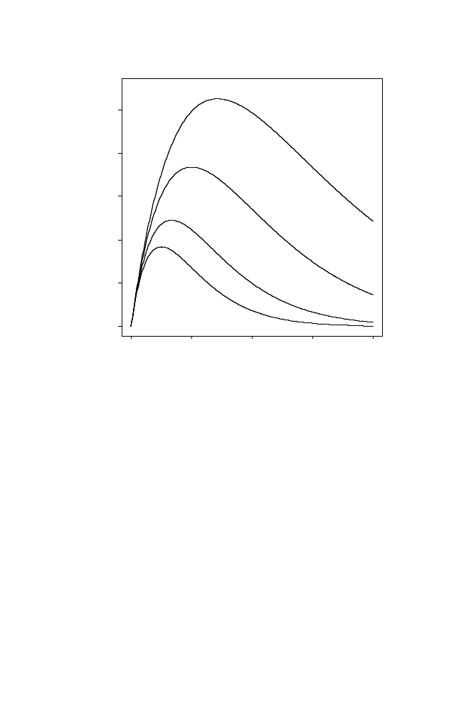

114
4 Physical Mapping of DNA
Genome Equivalents = c
0 2
4 6 8
0.0 0.2 0.4 0.6 0.8 1.0
Expected Number of Islands (in G/L)
θ
= 0
θ
= 0.25
θ
= 0.50
θ
= 0.65
Fig. 4.4.
Expected number of islands as a function of coverage for different values
of fractional overlap,
θ
, required to reliably detect that overlap.
an existing contig do not add to the number of contigs or islands. Some clones
will overlap the left end of one contig and the right end of another, causing the
contigs to merge. This means that the number of contigs and islands begins
to drop later in the process. Eventually, the number of islands is expected to
approach the final value of
Γ
= 1 (all clones merged into the single contig
representing the entire genome). But the approach to
Γ
= 1 gets slower and
slower as
c
increases. This is because, at the later stages of the process, most
of the genome has been spanned, and the probability that a random clone will
fall in the small gaps between the large contigs gets smaller and smaller.
We can estimate the number of “singletons,” clone inserts not overlapping
others, by using the same argument. A clone insert C is a singleton if there
is no other clone whose left end falls in the interval of length (1
−
θ
)
L
at the
left end of C (probability = e
−
(1
−
θ
)
c
)
and
there is no other clone whose right
end falls in the interval of length (1
−
θ
)
L
to the right of C. This has the same
probability as for the left end, so the joint probability that there is no other
clone whose left end falls in the intervals (1
−
θ
)
L
to the left
and
to the right of
C is e
−
2(1
−
θ
)
c
(the product of the two identical probabilities). The predicted
number of singletons is then